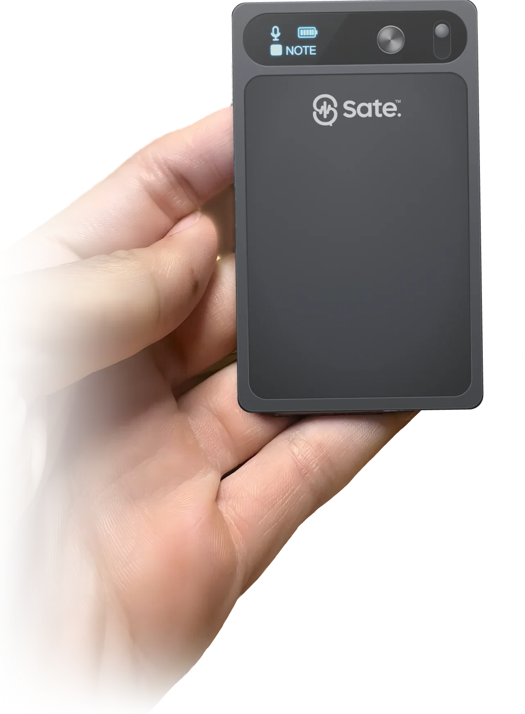

I'm a first-year Computer Science student at the University at Buffalo. I joined the ESC Group in September 2026 and work on the SATE project, a tool for speech-language pathologists (SLPs) that turns recordings of children talking into transcripts and language measures.
I'm still learning, mostly about speech and language AI and how it can be used in health care.
SATE is a small recorder and an app that turn everyday conversation into a transcript and language measures, so SLPs can follow a child's progress session by session.
I work on the language analysis behind it, mostly with large language models.

SATE 2.0: the language around a child at home
SATE 2.0 works on long home recordings, from 1 to 16 hours. I build the part that decides who each line is said to: the target child, another child, or an adult. From these labels, code counts how much speech the child hears directly, how often the child starts talking, and the back-and-forth turns, per activity and per hour. These numbers help pick the 5 to 15 minute episodes that an SLP then analyzes in detail. I test it on a public 14-hour family recording from HomeBank.
01Record 1-16 h
02Who talks to whom
03Metrics per hour
04Pick episodes
05Language sample analysis
Session report for speech therapy
A language model reads the transcript of a therapy session and finds the goals, the activities and each practice, with how much help the child needed: on their own, with a cue, with a model, or after a correction. I compare every version with hand labels over three runs, so a change only stays when it really helps.
SATE demo and website
I redesigned the segment picker in the SATE web demo, where an SLP chooses which part of a recording to analyze, and I built the SATE product website.
News
Nov 2026
Showed the SATE 2.0 features at the ESC group meeting.
Sep 2026
Joined the ESC Group as an undergraduate researcher.
Fall 2026
Started my B.S. in Computer Science at the University at Buffalo.
Before UB
High School for the Gifted, VNU-HCM
Listening Station 2025
A Vietnamese voice assistant for people who come to the Nụ Cười meal program of Bông Sen Charity in Ho Chi Minh City. It records and transcribes a conversation, finds urgent needs like medical or financial aid, and organizes the case for the volunteers. I built it with Google Speech-to-Text and Text-to-Speech after volunteering in the kitchen, where many people had problems much bigger than hunger.
Awards Click a row to see the certificate
Outside the lab
I play soccer with my friends (our class got third place at the Năng Khiếu Championship 2025), I have kept ants for three years, and I play billiards, where I got a bronze medal at a club tournament.